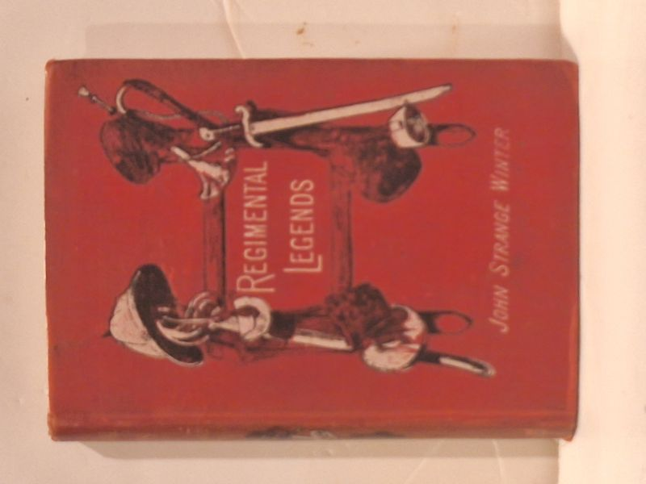

Regimental Legends
John Strange Winter (pseudonym of Henrietta Eliza Vaughan Stannard) · Chatto & Windus, London, 1893

C$30 · Good condition
Chatto & Windus, Piccadilly, London, 1893 ("A New Edition"). Red pictorial cloth boards with gilt lettering; sword-and-saddle decoration. Period gift inscription dated 'Dec. 25th 1893' on free endpaper - Christmas of the year of publication. Bookseller pencil notation on half-title noting John Strange Winter was the pseudonym of Henrietta Eliza Vaughan Stannard.
Details
- Publisher: Chatto & Windus, London, 1893
- Binding: Hardcover
- Edition: A New Edition (1893)
- Condition: Good
- Category: Military